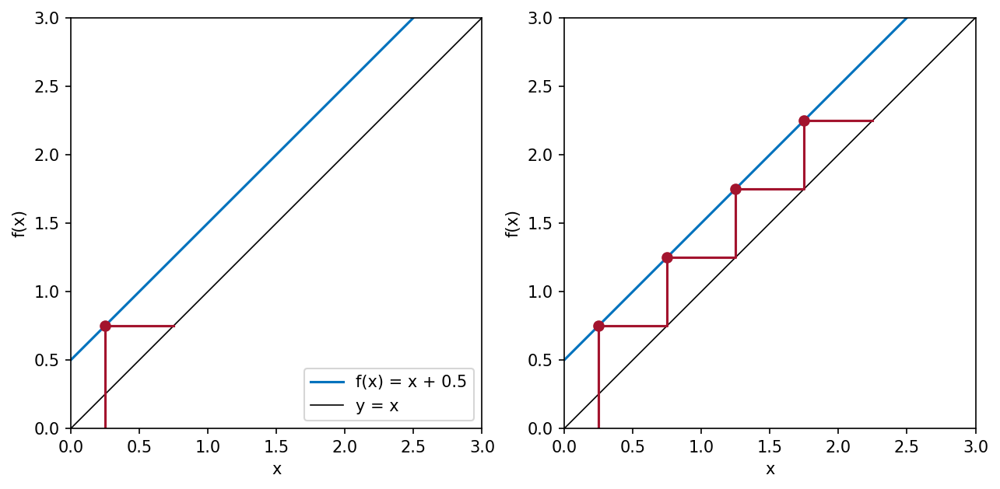
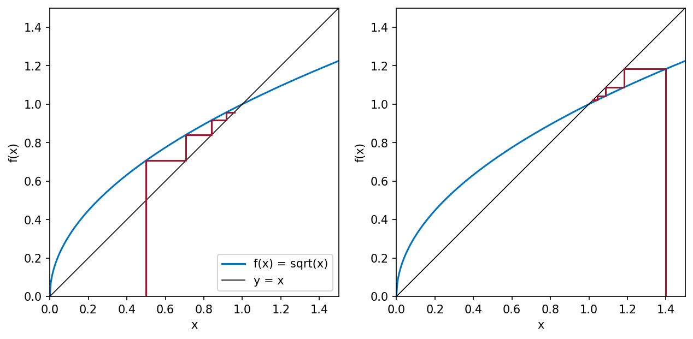
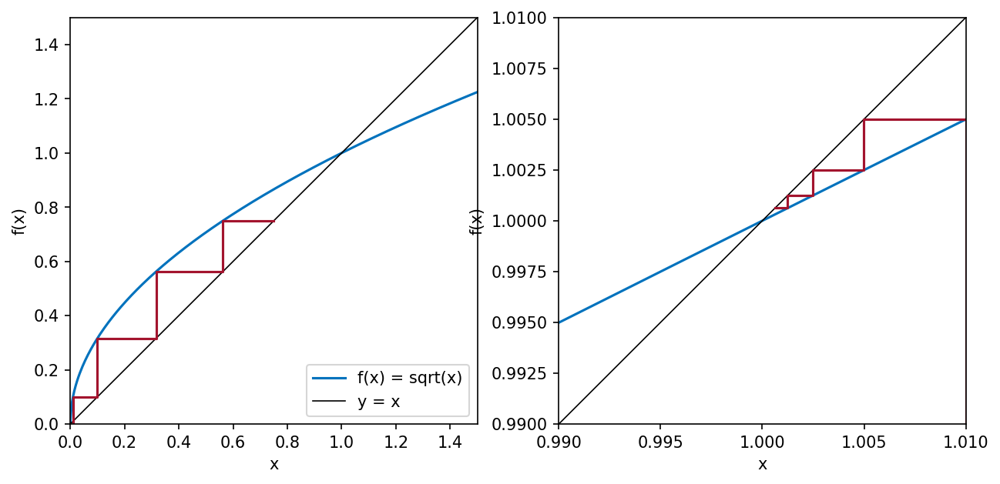
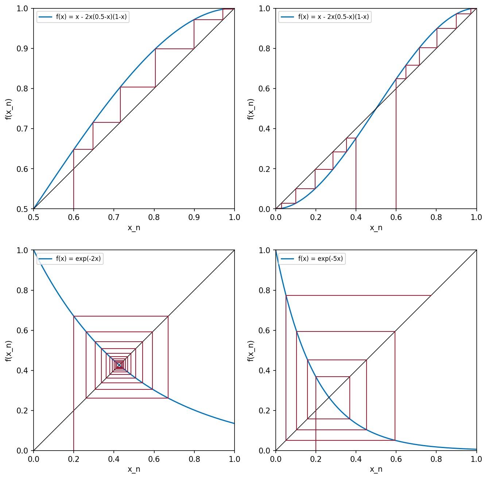
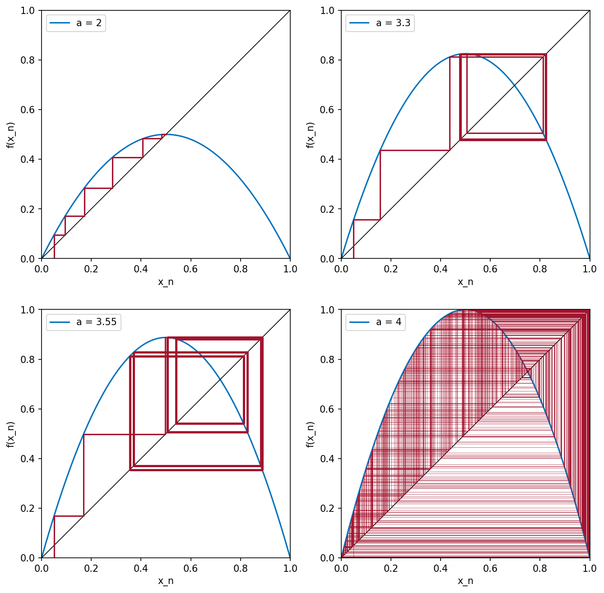

Chapter 1 · Discrete Dynamical Systems with One Variable
1.4Steady States and Stability
Steady states are the intersections of the update function with the diagonal. Whether a sequence runs toward a steady state or away from it is decided by the slope: for |f′(x*)| < 1 it is stable, for |f′(x*)| > 1 unstable. Periodic points are found as fixed points of fk.
For each figure of the section you will find the program that produces it. Change parameters and initial values and observe what happens. Figure and equation numbers refer to the book.
- Fig. 1.25Staircase diagram without a steady state
- Fig. 1.26Staircase diagrams for the square root function
- Fig. 1.27Stable and unstable state
- Fig. 1.28Staircase diagrams with stable and unstable states
- Fig. 1.29Steady states of the logistic model
- Fig. 1.30Cycles as fixed points of fk
- Fig. 1.31Staircase diagrams over 500 steps
- Apptry it in the browser
Fig. 1.25
Staircase diagram without a steady state
xn+1 = xn + 0.5
The graph of f does not intersect the diagonal; the staircase keeps rising steadily.

# Fig. 1.25: Staircase diagram for x_{n+1} = x_n + 0.5 (book, Section 1.4)
# x_0 = 0.25; left one step, right four steps. The graph of f does not intersect y = x: no steady state.
# (c) 2026 Philipp Kügler · Program for the book "Dynamical Systems in the Life Sciences" · MIT License (see LICENSE)
using Printf, Plots
f(x) = x + 0.5
x = zeros(5); x[1] = 0.25
for k in 1:4
x[k + 1] = f(x[k])
end
println("x_0 ... x_4 = ", join([@sprintf("%g", v) for v in x], " "))
function treppe(x, unten = 0.0) # points of the staircase: vertically to the graph, horizontally to the diagonal
px = [x[1]]; py = [unten]
for k in 1:length(x) - 1
append!(px, [x[k], x[k + 1]]); append!(py, [x[k + 1], x[k + 1]])
end
return px, py
end
rot = RGB(0.64, 0.08, 0.18)
bilder = []
for s in (1, 4)
p = plot([0, 3], [f(0), f(3)], color = RGB(0, 0.447, 0.741), lw = 2, legend = false, aspect_ratio = 1,
xlims = (0, 3), ylims = (0, 3), xlabel = "x", ylabel = "f(x)")
plot!(p, [0, 3], [0, 3], color = :black)
plot!(p, treppe(x[1:s + 1])..., color = rot)
scatter!(p, x[1:s], x[2:s + 1], color = rot) # points (x_n, x_{n+1})
push!(bilder, p)
end
display(plot(bilder..., layout = (1, 2), size = (900, 450)))% Fig. 1.25: Staircase diagram for x_{n+1} = x_n + 0.5 (book, Section 1.4)
% x_0 = 0.25; left one step, right four steps. The graph of f does not intersect y = x: no steady state.
% (c) 2026 Philipp Kügler · Program for the book "Dynamical Systems in the Life Sciences" · MIT License (see LICENSE)
f = @(x) x + 0.5;
x = zeros(1, 5); x(1) = 0.25;
for k = 1:4
x(k + 1) = f(x(k));
end
fprintf('x_0 ... x_4 = '); fprintf('%g ', x); fprintf('\n');
rot = [0.64 0.08 0.18];
schrittzahl = [1 4];
for p = 1:2
s = schrittzahl(p);
subplot(1, 2, p);
plot([0 3], [f(0) f(3)], 'Color', [0 0.447 0.741]); hold on
plot([0 3], [0 3], 'k-');
px = x(1); py = 0;
for k = 1:s
px = [px x(k) x(k + 1)]; py = [py x(k + 1) x(k + 1)];
end
plot(px, py, 'Color', rot);
plot(x(1:s), x(2:s + 1), 'o', 'Color', rot, 'MarkerFaceColor', rot); % points (x_n, x_{n+1})
hold off; axis equal; axis([0 3 0 3]); xlabel('x'); ylabel('f(x)');
end# Fig. 1.25: Staircase diagram for x_{n+1} = x_n + 0.5 (book, Section 1.4)
# x_0 = 0.25; left one step, right four steps. The graph of f does not intersect y = x: no steady state.
# (c) 2026 Philipp Kügler · Program for the book "Dynamical Systems in the Life Sciences" · MIT License (see LICENSE)
import numpy as np
import matplotlib.pyplot as plt
f = lambda x: x + 0.5
x = [0.25]
for _ in range(4):
x.append(f(x[-1]))
print("x_0 ... x_4 =", " ".join(f"{v:g}" for v in x))
fig, axs = plt.subplots(1, 2, figsize=(10, 5))
for ax, schritte in zip(axs, (1, 4)):
ax.plot([0, 3], [f(0), f(3)], color=(0, 0.447, 0.741), label="f(x) = x + 0.5")
ax.plot([0, 3], [0, 3], "k", lw=0.8, label="y = x")
px, py = [x[0]], [0]
for k in range(schritte):
px += [x[k], x[k + 1]]; py += [x[k + 1], x[k + 1]]
ax.plot(px, py, color=(0.64, 0.08, 0.18))
ax.plot(x[:schritte], x[1:schritte + 1], "o", color=(0.64, 0.08, 0.18)) # points (x_n, x_{n+1})
ax.set_xlim(0, 3); ax.set_ylim(0, 3); ax.set_aspect("equal")
ax.set_xlabel("x"); ax.set_ylabel("f(x)")
axs[0].legend(loc="lower right")
plt.show()# Fig. 1.25: Staircase diagram for x_{n+1} = x_n + 0.5 (book, Section 1.4)
# x_0 = 0.25; left one step, right four steps. The graph of f does not intersect y = x: no steady state.
# (c) 2026 Philipp Kügler · Program for the book "Dynamical Systems in the Life Sciences" · MIT License (see LICENSE)
f <- function(x) x + 0.5
x <- numeric(5); x[1] <- 0.25
for (k in 1:4) x[k + 1] <- f(x[k])
cat("x_0 ... x_4 =", sprintf("%g", x), "\n")
treppe <- function(x, unten = 0) { # points of the staircase: vertically to the graph, horizontally to the diagonal
px <- x[1]; py <- unten
for (k in 1:(length(x) - 1)) { px <- c(px, x[k], x[k + 1]); py <- c(py, x[k + 1], x[k + 1]) }
list(x = px, y = py)
}
rot <- rgb(0.64, 0.08, 0.18)
par(mfrow = c(1, 2))
for (s in c(1, 4)) {
plot(c(0, 3), c(f(0), f(3)), type = "l", col = rgb(0, 0.447, 0.741), lwd = 2, asp = 1, xlim = c(0, 3), ylim = c(0, 3),
xlab = "x", ylab = "f(x)")
abline(0, 1)
lines(treppe(x[1:(s + 1)]), col = rot)
points(x[1:s], x[2:(s + 1)], pch = 16, col = rot) # points (x_n, x_{n+1})
}Output in the command window
x_0 ... x_4 = 0.25 0.75 1.25 1.75 2.25Fig. 1.26
Staircase diagrams for the square root function
xn+1 = √xn
From x0 = 0.5 the staircase rises, from x0 = 1.4 it falls. In both cases it runs toward the intersection at 1.

# Fig. 1.26: Staircase diagrams for x_{n+1} = sqrt(x_n) (book, Section 1.4, Eq. 1.31)
# x_0 = 0.5 (left) and x_0 = 1.4 (right); the staircase runs toward the intersection of f(x) = sqrt(x) with y = x
# (c) 2026 Philipp Kügler · Program for the book "Dynamical Systems in the Life Sciences" · MIT License (see LICENSE)
using Printf, Plots
function treppe(x, unten = 0.0) # points of the staircase: vertically to the graph, horizontally to the diagonal
px = [x[1]]; py = [unten]
for k in 1:length(x) - 1
append!(px, [x[k], x[k + 1]]); append!(py, [x[k + 1], x[k + 1]])
end
return px, py
end
xx = range(0, 1.5, length = 300)
N = 4
bilder = []
for x0 in (0.5, 1.4)
x = zeros(N + 1); x[1] = x0
for k in 1:N
x[k + 1] = sqrt(x[k])
end
println(@sprintf("x_0 = %g: ", x0), join([@sprintf("%.4f", v) for v in x], " "))
p = plot(xx, sqrt.(xx), color = RGB(0, 0.447, 0.741), lw = 2, legend = false, aspect_ratio = 1,
xlims = (0, 1.5), ylims = (0, 1.5), xlabel = "x", ylabel = "f(x)")
plot!(p, [0, 1.5], [0, 1.5], color = :black)
plot!(p, treppe(x)..., color = RGB(0.64, 0.08, 0.18))
push!(bilder, p)
end
display(plot(bilder..., layout = (1, 2), size = (900, 450)))% Fig. 1.26: Staircase diagrams for x_{n+1} = sqrt(x_n) (book, Section 1.4, Eq. 1.31)
% x_0 = 0.5 (left) and x_0 = 1.4 (right); the staircase runs toward the intersection of f(x) = sqrt(x) with y = x
% (c) 2026 Philipp Kügler · Program for the book "Dynamical Systems in the Life Sciences" · MIT License (see LICENSE)
xx = linspace(0, 1.5, 300);
starts = [0.5 1.4]; N = 4;
for p = 1:2
x = zeros(1, N + 1); x(1) = starts(p);
for k = 1:N
x(k + 1) = sqrt(x(k));
end
fprintf('x_0 = %g: ', starts(p)); fprintf('%.4f ', x); fprintf('\n');
px = x(1); py = 0;
for k = 1:N
px = [px x(k) x(k + 1)]; py = [py x(k + 1) x(k + 1)];
end
subplot(1, 2, p);
plot(xx, sqrt(xx), 'Color', [0 0.447 0.741]); hold on
plot([0 1.5], [0 1.5], 'k-');
plot(px, py, 'Color', [0.64 0.08 0.18]); hold off
axis equal; axis([0 1.5 0 1.5]); xlabel('x'); ylabel('f(x)');
end# Fig. 1.26: Staircase diagrams for x_{n+1} = sqrt(x_n) (book, Section 1.4, Eq. 1.31)
# x_0 = 0.5 (left) and x_0 = 1.4 (right); the staircase runs toward the intersection of f(x) = sqrt(x) with y = x
# (c) 2026 Philipp Kügler · Program for the book "Dynamical Systems in the Life Sciences" · MIT License (see LICENSE)
import numpy as np
import matplotlib.pyplot as plt
def treppe(ax, f, x0, N):
x = [x0]
for _ in range(N):
x.append(f(x[-1]))
px, py = [x[0]], [0]
for k in range(N):
px += [x[k], x[k + 1]]; py += [x[k + 1], x[k + 1]]
ax.plot(px, py, color=(0.64, 0.08, 0.18))
return x
xx = np.linspace(0, 1.5, 300)
fig, axs = plt.subplots(1, 2, figsize=(10, 5))
for ax, x0 in zip(axs, (0.5, 1.4)):
ax.plot(xx, np.sqrt(xx), color=(0, 0.447, 0.741), label="f(x) = sqrt(x)")
ax.plot([0, 1.5], [0, 1.5], "k", lw=0.8, label="y = x")
x = treppe(ax, np.sqrt, x0, 4)
print(f"x_0 = {x0}:", " ".join(f"{v:.4f}" for v in x))
ax.set_xlim(0, 1.5); ax.set_ylim(0, 1.5); ax.set_aspect("equal")
ax.set_xlabel("x"); ax.set_ylabel("f(x)")
axs[0].legend(loc="lower right")
plt.show()# Fig. 1.26: Staircase diagrams for x_{n+1} = sqrt(x_n) (book, Section 1.4, Eq. 1.31)
# x_0 = 0.5 (left) and x_0 = 1.4 (right); the staircase runs toward the intersection of f(x) = sqrt(x) with y = x
# (c) 2026 Philipp Kügler · Program for the book "Dynamical Systems in the Life Sciences" · MIT License (see LICENSE)
treppe <- function(x, unten = 0) { # points of the staircase: vertically to the graph, horizontally to the diagonal
px <- x[1]; py <- unten
for (k in 1:(length(x) - 1)) { px <- c(px, x[k], x[k + 1]); py <- c(py, x[k + 1], x[k + 1]) }
list(x = px, y = py)
}
xx <- seq(0, 1.5, length.out = 300)
N <- 4
par(mfrow = c(1, 2))
for (x0 in c(0.5, 1.4)) {
x <- numeric(N + 1); x[1] <- x0
for (k in 1:N) x[k + 1] <- sqrt(x[k])
cat(sprintf("x_0 = %g:", x0), sprintf("%.4f", x), "\n")
plot(xx, sqrt(xx), type = "l", col = rgb(0, 0.447, 0.741), lwd = 2, asp = 1, xlim = c(0, 1.5), ylim = c(0, 1.5),
xlab = "x", ylab = "f(x)")
abline(0, 1)
lines(treppe(x), col = rgb(0.64, 0.08, 0.18))
}Output in the command window
x_0 = 0.5: 0.5000 0.7071 0.8409 0.9170 0.9576
x_0 = 1.4: 1.4000 1.1832 1.0878 1.0430 1.0213Fig. 1.27
Stable and unstable state
xa* = 0 (unstable), xb* = 1 (stable)
Near 0 the square root function is steeper than the diagonal, and the sequence moves away. Near 1 it is flatter (f′(1) = 0.5), and the sequence approaches.

# Fig. 1.27: Steady states of x_{n+1} = sqrt(x_n) (book, Section 1.4, Eq. 1.31)
# left: start at 0.01 near the unstable state 0; right: start at 1.01 near the stable state 1
# (c) 2026 Philipp Kügler · Program for the book "Dynamical Systems in the Life Sciences" · MIT License (see LICENSE)
using Printf, Plots
function treppe(x, unten = 0.0) # points of the staircase: vertically to the graph, horizontally to the diagonal
px = [x[1]]; py = [unten]
for k in 1:length(x) - 1
append!(px, [x[k], x[k + 1]]); append!(py, [x[k + 1], x[k + 1]])
end
return px, py
end
N = 4
bilder = []
for (x0, lo, hi) in [(0.01, 0.0, 1.5), (1.01, 0.99, 1.01)]
x = zeros(N + 1); x[1] = x0
for k in 1:N
x[k + 1] = sqrt(x[k])
end
println(@sprintf("x_0 = %g: ", x0), join([@sprintf("%.5f", v) for v in x], " "))
xx = range(lo, hi, length = 300)
p = plot(xx, sqrt.(xx), color = RGB(0, 0.447, 0.741), lw = 2, legend = false, aspect_ratio = 1,
xlims = (lo, hi), ylims = (lo, hi), xlabel = "x", ylabel = "f(x)")
plot!(p, [lo, hi], [lo, hi], color = :black)
plot!(p, treppe(x, lo)..., color = RGB(0.64, 0.08, 0.18))
push!(bilder, p)
end
println("f'(x) = 1/(2 sqrt(x)): f'(1) = 0.5 < 1 (stable), f'(x) -> infinity for x -> 0 (unstable)")
display(plot(bilder..., layout = (1, 2), size = (900, 450)))% Fig. 1.27: Steady states of x_{n+1} = sqrt(x_n) (book, Section 1.4, Eq. 1.31)
% left: start at 0.01 near the unstable state 0; right: start at 1.01 near the stable state 1
% (c) 2026 Philipp Kügler · Program for the book "Dynamical Systems in the Life Sciences" · MIT License (see LICENSE)
starts = [0.01 1.01]; grenzen = [0 1.5; 0.99 1.01]; N = 4;
for p = 1:2
lo = grenzen(p, 1); hi = grenzen(p, 2);
x = zeros(1, N + 1); x(1) = starts(p);
for k = 1:N
x(k + 1) = sqrt(x(k));
end
fprintf('x_0 = %g: ', starts(p)); fprintf('%.5f ', x); fprintf('\n');
px = x(1); py = lo;
for k = 1:N
px = [px x(k) x(k + 1)]; py = [py x(k + 1) x(k + 1)];
end
xx = linspace(lo, hi, 300);
subplot(1, 2, p);
plot(xx, sqrt(xx), 'Color', [0 0.447 0.741]); hold on
plot([lo hi], [lo hi], 'k-');
plot(px, py, 'Color', [0.64 0.08 0.18]); hold off
axis equal; axis([lo hi lo hi]); xlabel('x'); ylabel('f(x)');
end
disp('f''(x) = 1/(2 sqrt(x)): f''(1) = 0.5 < 1 (stabil), f''(x) -> unendlich für x -> 0 (instabil)');# Fig. 1.27: Steady states of x_{n+1} = sqrt(x_n) (book, Section 1.4, Eq. 1.31)
# left: start at 0.01 near the unstable state 0; right: start at 1.01 near the stable state 1
# (c) 2026 Philipp Kügler · Program for the book "Dynamical Systems in the Life Sciences" · MIT License (see LICENSE)
import numpy as np
import matplotlib.pyplot as plt
def treppe(ax, f, x0, N):
x = [x0]
for _ in range(N):
x.append(f(x[-1]))
px, py = [x[0]], [0 if x0 < 0.5 else 0.99]
for k in range(N):
px += [x[k], x[k + 1]]; py += [x[k + 1], x[k + 1]]
ax.plot(px, py, color=(0.64, 0.08, 0.18))
return x
fig, axs = plt.subplots(1, 2, figsize=(10, 5))
for ax, x0, (lo, hi) in zip(axs, (0.01, 1.01), ((0, 1.5), (0.99, 1.01))):
xx = np.linspace(lo, hi, 300)
ax.plot(xx, np.sqrt(xx), color=(0, 0.447, 0.741), label="f(x) = sqrt(x)")
ax.plot([lo, hi], [lo, hi], "k", lw=0.8, label="y = x")
x = treppe(ax, np.sqrt, x0, 4)
print(f"x_0 = {x0}:", " ".join(f"{v:.5f}" for v in x))
ax.set_xlim(lo, hi); ax.set_ylim(lo, hi); ax.set_aspect("equal")
ax.set_xlabel("x"); ax.set_ylabel("f(x)")
axs[0].legend(loc="lower right")
print("f'(x) = 1/(2 sqrt(x)): f'(1) = 0.5 < 1 (stable), f'(x) -> infinity for x -> 0 (unstable)")
plt.show()# Fig. 1.27: Steady states of x_{n+1} = sqrt(x_n) (book, Section 1.4, Eq. 1.31)
# left: start at 0.01 near the unstable state 0; right: start at 1.01 near the stable state 1
# (c) 2026 Philipp Kügler · Program for the book "Dynamical Systems in the Life Sciences" · MIT License (see LICENSE)
treppe <- function(x, unten = 0) { # points of the staircase: vertically to the graph, horizontally to the diagonal
px <- x[1]; py <- unten
for (k in 1:(length(x) - 1)) { px <- c(px, x[k], x[k + 1]); py <- c(py, x[k + 1], x[k + 1]) }
list(x = px, y = py)
}
N <- 4
par(mfrow = c(1, 2))
for (p in 1:2) {
x0 <- c(0.01, 1.01)[p]; lo <- c(0, 0.99)[p]; hi <- c(1.5, 1.01)[p]
x <- numeric(N + 1); x[1] <- x0
for (k in 1:N) x[k + 1] <- sqrt(x[k])
cat(sprintf("x_0 = %g:", x0), sprintf("%.5f", x), "\n")
xx <- seq(lo, hi, length.out = 300)
plot(xx, sqrt(xx), type = "l", col = rgb(0, 0.447, 0.741), lwd = 2, asp = 1, xlim = c(lo, hi), ylim = c(lo, hi),
xlab = "x", ylab = "f(x)")
abline(0, 1)
lines(treppe(x, lo), col = rgb(0.64, 0.08, 0.18))
}
cat("f'(x) = 1/(2 sqrt(x)): f'(1) = 0.5 < 1 (stable), f'(x) -> infinity for x -> 0 (unstable)\n")Output in the command window
x_0 = 0.01: 0.01000 0.10000 0.31623 0.56234 0.74989
x_0 = 1.01: 1.01000 1.00499 1.00249 1.00124 1.00062
f'(x) = 1/(2 sqrt(x)): f'(1) = 0.5 < 1 (stable), f'(x) -> infinity for x -> 0 (unstable)Fig. 1.28
Staircase diagrams with stable and unstable states
|f′(x*)| < 1 ⇒ stable
A negative slope produces a spiral: for f(x) = e−2x, f′(x*) ≈ −0.85 and the spiral contracts; for f(x) = e−5x, f′(x*) ≈ −1.33 and it widens.

# Fig. 1.28: Staircase diagrams with stable and unstable steady states (book, Section 1.4, Eq. 1.34)
# top: f(x) = x - 2x(0.5 - x)(1 - x) with fixed points 0 and 1 (stable) and 0.5 (unstable)
# bottom: f(x) = exp(-2x) (spiral approach) and f(x) = exp(-5x) (spiral divergence), each with x_0 = 0.2
# (c) 2026 Philipp Kügler · Program for the book "Dynamical Systems in the Life Sciences" · MIT License (see LICENSE)
using Printf, Plots
function treppe(x, unten = 0.0) # points of the staircase: vertically to the graph, horizontally to the diagonal
px = [x[1]]; py = [unten]
for k in 1:length(x) - 1
append!(px, [x[k], x[k + 1]]); append!(py, [x[k + 1], x[k + 1]])
end
return px, py
end
g(x) = x - 2 * x * (0.5 - x) * (1 - x)
faelle = [(g, "f(x) = x - 2x(0.5-x)(1-x)", [0.6], 20, 0.5, 1.0),
(g, "f(x) = x - 2x(0.5-x)(1-x)", [0.4, 0.6], 20, 0.0, 1.0),
(x -> exp(-2x), "f(x) = exp(-2x)", [0.2], 20, 0.0, 1.0),
(x -> exp(-5x), "f(x) = exp(-5x)", [0.2], 7, 0.0, 1.0)]
bilder = []
for (f, name, starts, N, lo, hi) in faelle
xx = range(lo, hi, length = 400)
p = plot(xx, f.(xx), color = RGB(0, 0.447, 0.741), lw = 2, legend = false, aspect_ratio = 1,
xlims = (lo, hi), ylims = (lo, hi), xlabel = "x_n", ylabel = "f(x_n)", title = name, titlefontsize = 9)
plot!(p, [lo, hi], [lo, hi], color = :black)
for x0 in starts
x = zeros(N + 1); x[1] = x0
for k in 1:N
x[k + 1] = f(x[k])
end
plot!(p, treppe(x, lo)..., color = RGB(0.64, 0.08, 0.18))
@printf("%s, x_0 = %g: x_%d = %.4f\n", name, x0, N, x[end])
end
push!(bilder, p)
end
display(plot(bilder..., layout = (2, 2), size = (850, 850)))
# stability criterion |f'(x*)| < 1 at the fixed points
for c in (2, 5)
xs = 0.5
for k in 1:100 # fixed point with Newton's method
xs = xs - (exp(-c * xs) - xs) / (-c * exp(-c * xs) - 1)
end
@printf("f(x) = exp(-%dx): x* = %.4f, f'(x*) = %.4f\n", c, xs, -c * exp(-c * xs))
end% Fig. 1.28: Staircase diagrams with stable and unstable steady states (book, Section 1.4, Eq. 1.34)
% top: f(x) = x - 2x(0.5 - x)(1 - x) with fixed points 0 and 1 (stable) and 0.5 (unstable)
% bottom: f(x) = exp(-2x) (spiral approach) and f(x) = exp(-5x) (spiral divergence), each with x_0 = 0.2
% (c) 2026 Philipp Kügler · Program for the book "Dynamical Systems in the Life Sciences" · MIT License (see LICENSE)
g = @(x) x - 2 * x .* (0.5 - x) .* (1 - x);
fs = {g, g, @(x) exp(-2 * x), @(x) exp(-5 * x)};
namen = {'f(x) = x - 2x(0.5-x)(1-x)', 'f(x) = x - 2x(0.5-x)(1-x)', 'f(x) = exp(-2x)', 'f(x) = exp(-5x)'};
starts = {0.6, [0.4 0.6], 0.2, 0.2};
schritte = [20 20 20 7];
grenzen = [0.5 1; 0 1; 0 1; 0 1];
for p = 1:4
f = fs{p}; N = schritte(p); lo = grenzen(p, 1); hi = grenzen(p, 2);
xx = linspace(lo, hi, 400);
subplot(2, 2, p);
plot(xx, f(xx), 'Color', [0 0.447 0.741]); hold on
plot([lo hi], [lo hi], 'k-');
for x0 = starts{p}
x = zeros(1, N + 1); x(1) = x0;
for k = 1:N
x(k + 1) = f(x(k));
end
px = x(1); py = lo;
for k = 1:N
px = [px x(k) x(k + 1)]; py = [py x(k + 1) x(k + 1)];
end
plot(px, py, 'Color', [0.64 0.08 0.18]);
fprintf('%s, x_0 = %g: x_%d = %.4f\n', namen{p}, x0, N, x(end));
end
hold off; axis equal; axis([lo hi lo hi]);
xlabel('x_n'); ylabel('f(x_n)'); title(namen{p});
end
% stability criterion |f'(x*)| < 1 at the fixed points
for c = [2 5]
xs = 0.5;
for k = 1:100 % fixed point with Newton's method
xs = xs - (exp(-c * xs) - xs) / (-c * exp(-c * xs) - 1);
end
fprintf('f(x) = exp(-%dx): x* = %.4f, f''(x*) = %.4f\n', c, xs, -c * exp(-c * xs));
end# Fig. 1.28: Staircase diagrams with stable and unstable steady states (book, Section 1.4, Eq. 1.34)
# top: f(x) = x - 2x(0.5 - x)(1 - x) with fixed points 0 and 1 (stable) and 0.5 (unstable)
# bottom: f(x) = exp(-2x) (spiral approach) and f(x) = exp(-5x) (spiral divergence), each with x_0 = 0.2
# (c) 2026 Philipp Kügler · Program for the book "Dynamical Systems in the Life Sciences" · MIT License (see LICENSE)
import numpy as np
import matplotlib.pyplot as plt
def treppe(ax, f, x0, N, lo):
x = [x0]
for _ in range(N):
x.append(f(x[-1]))
px, py = [x[0]], [lo]
for k in range(N):
px += [x[k], x[k + 1]]; py += [x[k + 1], x[k + 1]]
ax.plot(px, py, color=(0.64, 0.08, 0.18), lw=1)
return x
g = lambda x: x - 2 * x * (0.5 - x) * (1 - x)
faelle = [(g, "f(x) = x - 2x(0.5-x)(1-x)", [0.6], 20, (0.5, 1)),
(g, "f(x) = x - 2x(0.5-x)(1-x)", [0.4, 0.6], 20, (0, 1)),
(lambda x: np.exp(-2 * x), "f(x) = exp(-2x)", [0.2], 20, (0, 1)),
(lambda x: np.exp(-5 * x), "f(x) = exp(-5x)", [0.2], 7, (0, 1))]
fig, axs = plt.subplots(2, 2, figsize=(9, 9))
for ax, (f, name, starts, N, (lo, hi)) in zip(axs.flat, faelle):
xx = np.linspace(lo, hi, 400)
ax.plot(xx, f(xx), color=(0, 0.447, 0.741), label=name)
ax.plot([lo, hi], [lo, hi], "k", lw=0.8)
for x0 in starts:
x = treppe(ax, f, x0, N, lo)
print(f"{name}, x_0 = {x0}: x_{N} = {x[-1]:.4f}")
ax.set_xlim(lo, hi); ax.set_ylim(lo, hi); ax.set_aspect("equal")
ax.set_xlabel("x_n"); ax.set_ylabel("f(x_n)"); ax.legend(loc="upper left", fontsize=8)
# stability criterion |f'(x*)| < 1 at the fixed points
for c in (2, 5):
xs = 0.5
for _ in range(100): # fixed point with Newton's method
xs -= (np.exp(-c * xs) - xs) / (-c * np.exp(-c * xs) - 1)
print(f"f(x) = exp(-{c}x): x* = {xs:.4f}, f'(x*) = {-c * np.exp(-c * xs):.4f}")
plt.tight_layout()
plt.show()# Fig. 1.28: Staircase diagrams with stable and unstable steady states (book, Section 1.4, Eq. 1.34)
# top: f(x) = x - 2x(0.5 - x)(1 - x) with fixed points 0 and 1 (stable) and 0.5 (unstable)
# bottom: f(x) = exp(-2x) (spiral approach) and f(x) = exp(-5x) (spiral divergence), each with x_0 = 0.2
# (c) 2026 Philipp Kügler · Program for the book "Dynamical Systems in the Life Sciences" · MIT License (see LICENSE)
treppe <- function(x, unten = 0) { # points of the staircase: vertically to the graph, horizontally to the diagonal
px <- x[1]; py <- unten
for (k in 1:(length(x) - 1)) { px <- c(px, x[k], x[k + 1]); py <- c(py, x[k + 1], x[k + 1]) }
list(x = px, y = py)
}
g <- function(x) x - 2 * x * (0.5 - x) * (1 - x)
fs <- list(g, g, function(x) exp(-2 * x), function(x) exp(-5 * x))
namen <- c("f(x) = x - 2x(0.5-x)(1-x)", "f(x) = x - 2x(0.5-x)(1-x)", "f(x) = exp(-2x)", "f(x) = exp(-5x)")
starts <- list(0.6, c(0.4, 0.6), 0.2, 0.2)
schritte <- c(20, 20, 20, 7)
grenzen <- rbind(c(0.5, 1), c(0, 1), c(0, 1), c(0, 1))
par(mfrow = c(2, 2))
for (p in 1:4) {
f <- fs[[p]]; N <- schritte[p]; lo <- grenzen[p, 1]; hi <- grenzen[p, 2]
xx <- seq(lo, hi, length.out = 400)
plot(xx, f(xx), type = "l", col = rgb(0, 0.447, 0.741), lwd = 2, asp = 1, xlim = c(lo, hi), ylim = c(lo, hi),
xlab = "x_n", ylab = "f(x_n)", main = namen[p], cex.main = 0.9)
abline(0, 1)
for (x0 in starts[[p]]) {
x <- numeric(N + 1); x[1] <- x0
for (k in 1:N) x[k + 1] <- f(x[k])
lines(treppe(x, lo), col = rgb(0.64, 0.08, 0.18))
cat(sprintf("%s, x_0 = %g: x_%d = %.4f\n", namen[p], x0, N, x[N + 1]))
}
}
# stability criterion |f'(x*)| < 1 at the fixed points
for (c in c(2, 5)) {
xs <- 0.5
for (k in 1:100) xs <- xs - (exp(-c * xs) - xs) / (-c * exp(-c * xs) - 1) # fixed point with Newton's method
cat(sprintf("f(x) = exp(-%dx): x* = %.4f, f'(x*) = %.4f\n", c, xs, -c * exp(-c * xs)))
}Output in the command window
f(x) = x - 2x(0.5-x)(1-x), x_0 = 0.6: x_20 = 1.0000
f(x) = x - 2x(0.5-x)(1-x), x_0 = 0.4: x_20 = 0.0000
f(x) = x - 2x(0.5-x)(1-x), x_0 = 0.6: x_20 = 1.0000
f(x) = exp(-2x), x_0 = 0.2: x_20 = 0.4165
f(x) = exp(-5x), x_0 = 0.2: x_7 = 0.7729
f(x) = exp(-2x): x* = 0.4263, f'(x*) = -0.8526
f(x) = exp(-5x): x* = 0.2653, f'(x*) = -1.3267Fig. 1.29
Steady states of the logistic model
yα* = 0, yβ* = 1 − 1/a
At a = 1 the two steady states exchange their stability (transcritical bifurcation); at a = 3, yβ* becomes unstable and a 2-cycle arises (period doubling).

# Fig. 1.29: Steady states of the logistic model and their stability (book, Section 1.4, Eq. 1.35)
# y*_alpha = 0 and y*_beta = 1 - 1/a (solid stable, dashed unstable) with the bifurcation diagram
# (c) 2026 Philipp Kügler · Program for the book "Dynamical Systems in the Life Sciences" · MIT License (see LICENSE)
using Plots
blau = RGB(0, 0.447, 0.741)
a = range(3.0, 4.0, length = 1001) # bifurcation diagram (light green) for 3 <= a <= 4
y = fill(0.5, length(a))
for k in 1:2000
global y = a .* y .* (1 .- y)
end
A = Float64[]; Y = Float64[]
for k in 1:300
global y = a .* y .* (1 .- y)
append!(A, a); append!(Y, y)
end
p = scatter(A, Y, ms = 0.5, msw = 0, color = RGB(0.47, 0.71, 0.47), legend = false,
xlims = (0, 4), ylims = (-0.25, 1.05), xlabel = "a", ylabel = "y")
plot!(p, [0, 1], [0, 0], color = blau, lw = 2); plot!(p, [1, 4], [0, 0], ls = :dash, color = blau, lw = 2) # y*_alpha = 0
for (von, bis, stil) in [(0.8, 1, :dash), (1, 3, :solid), (3, 4, :dash)] # y*_beta = 1 - 1/a
aa = range(von, bis, length = 100)
plot!(p, aa, 1 .- 1 ./ aa, ls = stil, color = blau, lw = 2)
end
vline!(p, [1, 3], ls = :dot, color = :gray)
println("f'(y) = a (1 - 2y): f'(0) = a, f'(1 - 1/a) = 2 - a")
println("y*_alpha stable for a < 1, y*_beta stable for 1 < a < 3")
display(p)% Fig. 1.29: Steady states of the logistic model and their stability (book, Section 1.4, Eq. 1.35)
% y*_alpha = 0 and y*_beta = 1 - 1/a (solid stable, dashed unstable) with the bifurcation diagram
% (c) 2026 Philipp Kügler · Program for the book "Dynamical Systems in the Life Sciences" · MIT License (see LICENSE)
blau = [0 0.447 0.741];
a = linspace(3.0, 4.0, 1001); % bifurcation diagram (light green) for 3 <= a <= 4
y = 0.5 * ones(size(a));
for k = 1:2000
y = a .* y .* (1 - y);
end
A = []; Y = [];
for k = 1:300
y = a .* y .* (1 - y);
A = [A a]; Y = [Y y];
end
plot(A, Y, '.', 'Color', [0.47 0.71 0.47], 'MarkerSize', 1); hold on
plot([0 1], [0 0], '-', 'Color', blau); plot([1 4], [0 0], '--', 'Color', blau); % y*_alpha = 0
aa = linspace(0.8, 1, 50); plot(aa, 1 - 1 ./ aa, '--', 'Color', blau); % y*_beta = 1 - 1/a
aa = linspace(1, 3, 200); plot(aa, 1 - 1 ./ aa, '-', 'Color', blau);
aa = linspace(3, 4, 100); plot(aa, 1 - 1 ./ aa, '--', 'Color', blau);
plot([1 1], [-0.25 1.05], ':', 'Color', [0.6 0.6 0.6]); plot([3 3], [-0.25 1.05], ':', 'Color', [0.6 0.6 0.6]);
hold off; axis([0 4 -0.25 1.05]); xlabel('a'); ylabel('y');
disp('f''(y) = a (1 - 2y): f''(0) = a, f''(1 - 1/a) = 2 - a');
disp('y*_alpha stable for a < 1, y*_beta stable for 1 < a < 3');# Fig. 1.29: Steady states of the logistic model and their stability (book, Section 1.4, Eq. 1.35)
# y*_alpha = 0 and y*_beta = 1 - 1/a (solid stable, dashed unstable) with the bifurcation diagram
# (c) 2026 Philipp Kügler · Program for the book "Dynamical Systems in the Life Sciences" · MIT License (see LICENSE)
import numpy as np
import matplotlib.pyplot as plt
blau = (0, 0.447, 0.741)
a = np.linspace(3.0, 4.0, 1001) # bifurcation diagram (light green) for 3 <= a <= 4
y = np.full_like(a, 0.5)
for _ in range(2000):
y = a * y * (1 - y)
for _ in range(300):
y = a * y * (1 - y)
plt.plot(a, y, ",", color=(0.47, 0.71, 0.47))
plt.plot([0, 1], [0, 0], color=blau); plt.plot([1, 4], [0, 0], "--", color=blau) # y*_alpha = 0
for lo, hi, ls in [(0.8, 1, "--"), (1, 3, "-"), (3, 4, "--")]: # y*_beta = 1 - 1/a
aa = np.linspace(lo, hi, 200)
plt.plot(aa, 1 - 1 / aa, ls, color=blau)
for aw in (1, 3):
plt.axvline(aw, color="0.6", ls=":")
print("f'(y) = a (1 - 2y): f'(0) = a, f'(1 - 1/a) = 2 - a")
print("y*_alpha stable for a < 1, y*_beta stable for 1 < a < 3")
plt.xlim(0, 4); plt.ylim(-0.25, 1.05)
plt.xlabel("a"); plt.ylabel("y")
plt.show()# Fig. 1.29: Steady states of the logistic model and their stability (book, Section 1.4, Eq. 1.35)
# y*_alpha = 0 and y*_beta = 1 - 1/a (solid stable, dashed unstable) with the bifurcation diagram
# (c) 2026 Philipp Kügler · Program for the book "Dynamical Systems in the Life Sciences" · MIT License (see LICENSE)
blau <- rgb(0, 0.447, 0.741)
a <- seq(3.0, 4.0, length.out = 1001) # bifurcation diagram (light green) for 3 <= a <= 4
y <- rep(0.5, length(a))
for (k in 1:2000) y <- a * y * (1 - y)
A <- c(); Y <- c()
for (k in 1:300) { y <- a * y * (1 - y); A <- c(A, a); Y <- c(Y, y) }
plot(A, Y, pch = ".", col = rgb(0.47, 0.71, 0.47), xlim = c(0, 4), ylim = c(-0.25, 1.05), xlab = "a", ylab = "y")
lines(c(0, 1), c(0, 0), col = blau, lwd = 2); lines(c(1, 4), c(0, 0), lty = 2, col = blau, lwd = 2) # y*_alpha = 0
aa <- seq(0.8, 1, length.out = 50); lines(aa, 1 - 1/aa, lty = 2, col = blau, lwd = 2) # y*_beta = 1 - 1/a
aa <- seq(1, 3, length.out = 200); lines(aa, 1 - 1/aa, col = blau, lwd = 2)
aa <- seq(3, 4, length.out = 100); lines(aa, 1 - 1/aa, lty = 2, col = blau, lwd = 2)
abline(v = c(1, 3), lty = 3, col = "grey60")
cat("f'(y) = a (1 - 2y): f'(0) = a, f'(1 - 1/a) = 2 - a\n")
cat("y*_alpha stable for a < 1, y*_beta stable for 1 < a < 3\n")Output in the command window
f'(y) = a (1 - 2y): f'(0) = a, f'(1 - 1/a) = 2 - a
y*_alpha stable for a < 1, y*_beta stable for 1 < a < 3Fig. 1.30
Cycles as fixed points of fk
f2(x) = f(f(x)), f3(x) = f(f(f(x)))
A 2-cycle of f consists of two fixed points of f2, a 3-cycle of three fixed points of f3. The program finds all fixed points and checks their stability.

# Fig. 1.30: Iterates f^2 and f^3 of the logistic model (book, Section 1.4, Eq. 1.38)
# left: f^2 with a = 3.1 (stable 2-cycle); right: f^3 with a = 3.835 (stable 3-cycle)
# fixed points of f^k: filled black = stable (|(f^k)'| < 1), white = unstable
# (c) 2026 Philipp Kügler · Program for the book "Dynamical Systems in the Life Sciences" · MIT License (see LICENSE)
using Printf, Plots
# root of g in the interval [lo, hi] by bisection (like fzero/brentq, without extra package)
function bisektion(g, lo, hi)
for _ in 1:100
m = (lo + hi) / 2
sign(g(m)) == sign(g(lo)) ? (lo = m) : (hi = m)
end
return (lo + hi) / 2
end
x = range(0, 1, length = 2000)
bilder = []
for (a, k) in [(3.1, 2), (3.835, 3)]
f(y) = a * y * (1 - y)
fk = k == 2 ? (y -> f(f(y))) : (y -> f(f(f(y)))) # f^2 or f^3
p = plot(x, fk.(x), color = RGB(0, 0.447, 0.741), lw = 2, legend = false, aspect_ratio = 1,
xlims = (0, 1), ylims = (0, 1), xlabel = "x", ylabel = "f^$k(x)", title = "a = $a")
plot!(p, [0, 1], [0, 1], color = :black)
# fixed points: look for sign changes of f^k(x) - x, then determine precisely
xg = range(0, 1, length = 20001); g = fk.(xg) .- xg
idx = findall(sign.(g[1:end-1]) .!= sign.(g[2:end]))
pts = unique(round.([0.0; [bisektion(z -> fk(z) - z, xg[i], xg[i + 1]) for i in idx]], digits = 10))
for q in pts
e = 1e-7; ableitung = (fk(q + e) - fk(q - e)) / (2 * e)
stabil = abs(ableitung) < 1
scatter!(p, [q], [q], color = stabil ? :black : :white, msc = :black)
@printf("a = %g, f^%d: x = %.4f %s (derivative %.3f)\n", a, k, q, stabil ? "stable" : "unstable", ableitung)
end
push!(bilder, p)
end
display(plot(bilder..., layout = (1, 2), size = (900, 450)))% Fig. 1.30: Iterates f^2 and f^3 of the logistic model (book, Section 1.4, Eq. 1.38)
% left: f^2 with a = 3.1 (stable 2-cycle); right: f^3 with a = 3.835 (stable 3-cycle)
% fixed points of f^k: filled black = stable (|(f^k)'| < 1), white = unstable
% (c) 2026 Philipp Kügler · Program for the book "Dynamical Systems in the Life Sciences" · MIT License (see LICENSE)
as = [3.1 3.835]; ks = [2 3];
x = linspace(0, 1, 2000);
for p = 1:2
a = as(p); k = ks(p);
f = @(y) a * y .* (1 - y);
if k == 2
fk = @(y) f(f(y)); % f^2
else
fk = @(y) f(f(f(y))); % f^3
end
subplot(1, 2, p);
plot(x, fk(x), 'Color', [0 0.447 0.741]); hold on
plot([0 1], [0 1], 'k-');
% fixed points: look for sign changes of f^k(x) - x, then determine precisely with fzero
xg = linspace(0, 1, 20001); g = fk(xg) - xg;
idx = find(sign(g(1:end-1)) ~= sign(g(2:end)));
pts = 0;
for i = idx
pts(end + 1) = fzero(@(z) fk(z) - z, [xg(i) xg(i + 1)]);
end
pts = unique(round(pts * 1e10) / 1e10);
for q = pts
e = 1e-7; ableitung = (fk(q + e) - fk(q - e)) / (2 * e);
if abs(ableitung) < 1
plot(q, q, 'ko', 'MarkerFaceColor', 'k'); art = 'stable';
else
plot(q, q, 'ko', 'MarkerFaceColor', 'w'); art = 'unstable';
end
fprintf('a = %g, f^%d: x = %.4f %s (derivative %.3f)\n', a, k, q, art, ableitung);
end
hold off; axis equal; axis([0 1 0 1]);
xlabel('x'); ylabel(sprintf('f^%d(x)', k)); title(sprintf('a = %g', a));
end# Fig. 1.30: Iterates f^2 and f^3 of the logistic model (book, Section 1.4, Eq. 1.38)
# left: f^2 with a = 3.1 (stable 2-cycle); right: f^3 with a = 3.835 (stable 3-cycle)
# fixed points of f^k: filled black = stable (|(f^k)'| < 1), white = unstable
# (c) 2026 Philipp Kügler · Program for the book "Dynamical Systems in the Life Sciences" · MIT License (see LICENSE)
import numpy as np
import matplotlib.pyplot as plt
def fk(x, a, k): # k-fold application of f(y) = a y (1 - y)
for _ in range(k):
x = a * x * (1 - x)
return x
def fixpunkte(a, k): # look for sign changes of f^k(x) - x, then bisect
x = np.linspace(0, 1, 200001)
g = fk(x, a, k) - x
pts = [0.0]
for i in np.where(np.sign(g[:-1]) != np.sign(g[1:]))[0]:
lo, hi = x[i], x[i + 1]
for _ in range(60):
m = (lo + hi) / 2
if np.sign(fk(lo, a, k) - lo) == np.sign(fk(m, a, k) - m): lo = m
else: hi = m
pts.append((lo + hi) / 2)
return sorted(set(np.round(pts, 10)))
fig, axs = plt.subplots(1, 2, figsize=(10, 5))
x = np.linspace(0, 1, 2000)
for ax, (a, k) in zip(axs, [(3.1, 2), (3.835, 3)]):
ax.plot(x, fk(x, a, k), color=(0, 0.447, 0.741), label=f"f^{k}(x), a = {a}")
ax.plot([0, 1], [0, 1], "k", lw=0.8)
for p in fixpunkte(a, k):
e = 1e-7
ableitung = (fk(p + e, a, k) - fk(p - e, a, k)) / (2 * e)
stabil = abs(ableitung) < 1
ax.plot(p, p, "o", mec="k", mfc="k" if stabil else "w", ms=8)
print(f"a = {a}, f^{k}: x = {p:.4f} {'stable' if stabil else 'unstable'} (derivative {ableitung:.3f})")
ax.set_xlim(0, 1); ax.set_ylim(0, 1); ax.set_aspect("equal")
ax.set_xlabel("x"); ax.set_ylabel(f"f^{k}(x)"); ax.legend(loc="upper left")
plt.show()# Fig. 1.30: Iterates f^2 and f^3 of the logistic model (book, Section 1.4, Eq. 1.38)
# left: f^2 with a = 3.1 (stable 2-cycle); right: f^3 with a = 3.835 (stable 3-cycle)
# fixed points of f^k: filled black = stable (|(f^k)'| < 1), white = unstable
# (c) 2026 Philipp Kügler · Program for the book "Dynamical Systems in the Life Sciences" · MIT License (see LICENSE)
x <- seq(0, 1, length.out = 2000)
par(mfrow = c(1, 2))
for (p in 1:2) {
a <- c(3.1, 3.835)[p]; k <- c(2, 3)[p]
f <- function(y) a * y * (1 - y)
fk <- if (k == 2) function(y) f(f(y)) else function(y) f(f(f(y))) # f^2 or f^3
plot(x, fk(x), type = "l", col = rgb(0, 0.447, 0.741), lwd = 2, asp = 1, xlim = c(0, 1), ylim = c(0, 1),
xlab = "x", ylab = sprintf("f^%d(x)", k), main = sprintf("a = %g", a))
abline(0, 1)
# fixed points: look for sign changes of f^k(x) - x, then determine precisely with uniroot
xg <- seq(0, 1, length.out = 20001); g <- fk(xg) - xg
idx <- which(sign(g[-length(g)]) != sign(g[-1]))
pts <- 0
for (i in idx) pts <- c(pts, uniroot(function(z) fk(z) - z, c(xg[i], xg[i + 1]), tol = 1e-12)$root)
pts <- unique(round(pts * 1e10) / 1e10)
for (q in pts) {
e <- 1e-7; ableitung <- (fk(q + e) - fk(q - e)) / (2 * e)
stabil <- abs(ableitung) < 1
points(q, q, pch = 21, bg = if (stabil) "black" else "white")
cat(sprintf("a = %g, f^%d: x = %.4f %s (derivative %.3f)\n", a, k, q, if (stabil) "stable" else "unstable", ableitung))
}
}Output in the command window
a = 3.1, f^2: x = 0.0000 unstable (derivative 9.610)
a = 3.1, f^2: x = 0.5580 stable (derivative 0.590)
a = 3.1, f^2: x = 0.6774 unstable (derivative 1.210)
a = 3.1, f^2: x = 0.7646 stable (derivative 0.590)
a = 3.835, f^3: x = 0.0000 unstable (derivative 56.402)
a = 3.835, f^3: x = 0.1521 stable (derivative -0.395)
a = 3.835, f^3: x = 0.1672 unstable (derivative 2.321)
a = 3.835, f^3: x = 0.4945 stable (derivative -0.395)
a = 3.835, f^3: x = 0.5340 unstable (derivative 2.321)
a = 3.835, f^3: x = 0.7392 unstable (derivative -6.179)
a = 3.835, f^3: x = 0.9543 unstable (derivative 2.321)
a = 3.835, f^3: x = 0.9586 stable (derivative -0.395)Fig. 1.31
Staircase diagrams over 500 steps
a = 2, 3.3, 3.55, 4
After a transient, a fixed point, a 2-cycle, an 8-cycle, or aperiodic behavior remains. The program counts the distinct values at the end of the sequence.

# Fig. 1.31: Staircase diagrams of the logistic model over 500 steps (book, Section 1.4)
# initial value 0.05; a = 2 (fixed point), 3.3 (2-cycle), 3.55 (8-cycle), 4 (aperiodic)
# (c) 2026 Philipp Kügler · Program for the book "Dynamical Systems in the Life Sciences" · MIT License (see LICENSE)
using Printf, Plots
N = 500
xx = range(0, 1, length = 400)
bilder = []
for a in (2, 3.3, 3.55, 4)
f(y) = a * y * (1 - y)
y = zeros(N + 1); y[1] = 0.05
for k in 1:N
y[k + 1] = f(y[k])
end
px = [y[1]]; py = [0.0] # staircase
for k in 1:N
append!(px, [y[k], y[k + 1]]); append!(py, [y[k + 1], y[k + 1]])
end
p = plot(xx, f.(xx), color = RGB(0, 0.447, 0.741), lw = 2, legend = false, aspect_ratio = 1, xlims = (0, 1), ylims = (0, 1),
xlabel = "x_n", ylabel = "f(x_n)", title = "a = $a")
plot!(p, [0, 1], [0, 1], color = :black)
plot!(p, px, py, color = RGB(0.64, 0.08, 0.18), lw = a < 4 ? 1.5 : 0.3)
push!(bilder, p)
werte = sort(unique(round.(y[end-15:end] .* 1e4) ./ 1e4)) # long-term behavior: distinct values at the end
if length(werte) <= 8
println(@sprintf("a = %g: %d distinct values at the end: ", a, length(werte)), join([@sprintf("%.4f", w) for w in werte], " "))
else
@printf("a = %g: %d distinct values at the end: aperiodic\n", a, length(werte))
end
end
display(plot(bilder..., layout = (2, 2), size = (850, 850)))% Fig. 1.31: Staircase diagrams of the logistic model over 500 steps (book, Section 1.4)
% initial value 0.05; a = 2 (fixed point), 3.3 (2-cycle), 3.55 (8-cycle), 4 (aperiodic)
% (c) 2026 Philipp Kügler · Program for the book "Dynamical Systems in the Life Sciences" · MIT License (see LICENSE)
N = 500; as = [2 3.3 3.55 4];
xx = linspace(0, 1, 400);
for p = 1:4
a = as(p);
f = @(y) a * y .* (1 - y);
y = zeros(1, N + 1); y(1) = 0.05;
for k = 1:N
y(k + 1) = f(y(k));
end
px = zeros(1, 2 * N + 1); py = zeros(1, 2 * N + 1);
px(1) = y(1);
for k = 1:N
px(2 * k) = y(k); py(2 * k) = y(k + 1);
px(2 * k + 1) = y(k + 1); py(2 * k + 1) = y(k + 1);
end
subplot(2, 2, p);
plot(xx, f(xx), 'Color', [0 0.447 0.741]); hold on
plot([0 1], [0 1], 'k-');
if a < 4, lw = 1.5; else, lw = 0.3; end
plot(px, py, 'Color', [0.64 0.08 0.18], 'LineWidth', lw); hold off
axis equal; axis([0 1 0 1]); xlabel('x_n'); ylabel('f(x_n)'); title(sprintf('a = %g', a));
werte = unique(round(y(end-15:end) * 1e4) / 1e4); % long-term behavior: distinct values at the end
if numel(werte) <= 8
fprintf('a = %g: %d distinct values at the end: ', a, numel(werte)); fprintf('%.4f ', werte); fprintf('\n');
else
fprintf('a = %g: %d distinct values at the end: aperiodic\n', a, numel(werte));
end
end# Fig. 1.31: Staircase diagrams of the logistic model over 500 steps (book, Section 1.4)
# initial value 0.05; a = 2 (fixed point), 3.3 (2-cycle), 3.55 (8-cycle), 4 (aperiodic)
# (c) 2026 Philipp Kügler · Program for the book "Dynamical Systems in the Life Sciences" · MIT License (see LICENSE)
import numpy as np
import matplotlib.pyplot as plt
N = 500
fig, axs = plt.subplots(2, 2, figsize=(9, 9))
xx = np.linspace(0, 1, 400)
for ax, a in zip(axs.flat, [2, 3.3, 3.55, 4]):
f = lambda y: a * y * (1 - y)
y = [0.05]
for _ in range(N):
y.append(f(y[-1]))
px, py = [y[0]], [0]
for k in range(N):
px += [y[k], y[k + 1]]; py += [y[k + 1], y[k + 1]]
ax.plot(xx, f(xx), color=(0, 0.447, 0.741), label=f"a = {a}")
ax.plot([0, 1], [0, 1], "k", lw=0.8)
ax.plot(px, py, color=(0.64, 0.08, 0.18), lw=1.5 if a < 4 else 0.3)
ax.set_xlim(0, 1); ax.set_ylim(0, 1); ax.set_aspect("equal")
ax.set_xlabel("x_n"); ax.set_ylabel("f(x_n)"); ax.legend(loc="upper left")
werte = sorted(set(round(float(v), 4) for v in y[-16:])) # long-term behavior: distinct values at the end
print(f"a = {a}: {len(werte)} distinct values at the end:", " ".join(f"{v:.4f}" for v in werte) if len(werte) <= 8 else "aperiodic")
plt.tight_layout()
plt.show()# Fig. 1.31: Staircase diagrams of the logistic model over 500 steps (book, Section 1.4)
# initial value 0.05; a = 2 (fixed point), 3.3 (2-cycle), 3.55 (8-cycle), 4 (aperiodic)
# (c) 2026 Philipp Kügler · Program for the book "Dynamical Systems in the Life Sciences" · MIT License (see LICENSE)
N <- 500
xx <- seq(0, 1, length.out = 400)
par(mfrow = c(2, 2))
for (a in c(2, 3.3, 3.55, 4)) {
f <- function(y) a * y * (1 - y)
y <- numeric(N + 1); y[1] <- 0.05
for (k in 1:N) y[k + 1] <- f(y[k])
px <- c(y[1], rep(y[1:N], each = 2)); py <- c(0, rep(y[2:(N + 1)], each = 2)) # staircase
px[seq(3, 2 * N + 1, 2)] <- y[2:(N + 1)]
plot(xx, f(xx), type = "l", col = rgb(0, 0.447, 0.741), lwd = 2, asp = 1, xlim = c(0, 1), ylim = c(0, 1),
xlab = "x_n", ylab = "f(x_n)", main = sprintf("a = %g", a))
abline(0, 1)
lines(px, py, col = rgb(0.64, 0.08, 0.18), lwd = if (a < 4) 1.5 else 0.3)
werte <- sort(unique(round(y[(N - 14):(N + 1)] * 1e4) / 1e4)) # long-term behavior: distinct values at the end
if (length(werte) <= 8) {
cat(sprintf("a = %g: %d distinct values at the end:", a, length(werte)), sprintf("%.4f", werte), "\n")
} else {
cat(sprintf("a = %g: %d distinct values at the end: aperiodic\n", a, length(werte)))
}
}Output in the command window
a = 2: 1 distinct values at the end: 0.5000
a = 3.3: 2 distinct values at the end: 0.4794 0.8236
a = 3.55: 8 distinct values at the end: 0.3548 0.3703 0.5060 0.5405 0.8127 0.8278 0.8817 0.8874
a = 4: 16 distinct values at the end: aperiodicTry it in the browser · no installation
Explore staircase diagrams yourself
Choose an update function. The app determines the steady states and checks their stability with the criterion |f′(x*)| < 1.